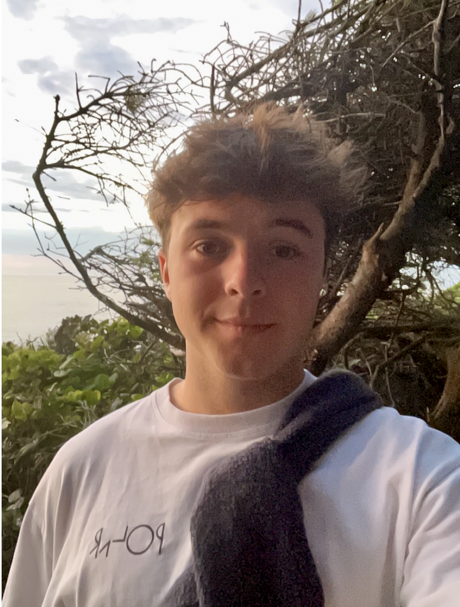

Martin Gregory-Eaves
Final-year BSc Applied Physics student and aspiring robotics engineer.
Welcome to my website. Here you can find my up-to-date CV, engineering and coding projects, and a collection of my favourite books, films, and videos. I use the blog section to write short essays and more developed reflections.
I have graduated from the University of Groningen with a BSc in Applied Physics and am now pursuing an MSc in Mechatronics, Robotics, and Biomechanical Engineering (MRBE). Recently, I worked on a hand prosthesis as part of the CybaNorth team competing in the Cybathlon and was a research assistant at the Lentink Lab, looking into gust mitigation techniques using basic BMP280 pressure sensors. I enjoy building things that sit between hardware and software and that efficiently solve real-world problems.
